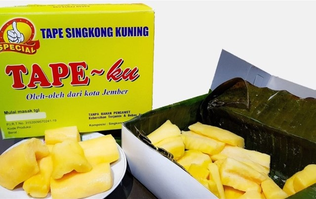
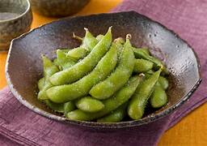

Local Foods of Jember
Jember is known for its delicious and diverse local food. Here are some of the must-try delicacies:
Tape
Tape is a traditional Indonesian snack made from fermented cassava, resulting in a sweet, tangy, and soft treat. It is enjoyed on its own or used in various desserts, often served during celebrations.

Edamame
Edamame are young soybeans typically boiled or steamed and served in their pods, offering a fresh, slightly sweet taste and rich protein content.The first edamame seeds in Indonesia were imported from Japan and cultivated in Jember, making it one of the main production centers for edamame in the country.

Pecel
A popular dish featuring mixed vegetables with a savory peanut sauce, often served with rice or lontong (rice cakes).